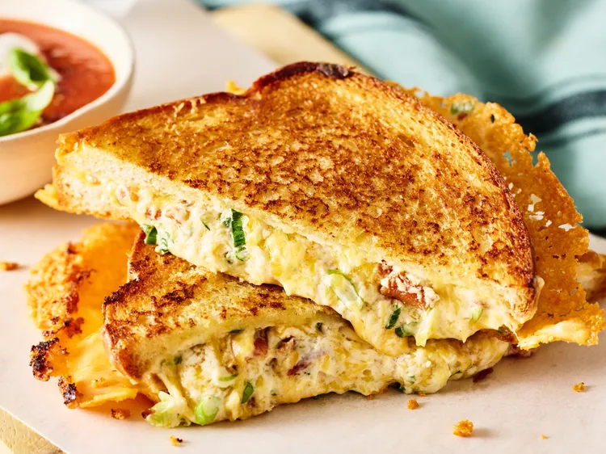

Ingredientes
Mezcle la mayonesa y 1/2 cucharadita de ajo en un tazón pequeño. Extienda 1 cucharada de la mezcla de mayonesa uniformemente sobre un lado de cada rebanada de pan.
Mezcle el queso crema, las cebolletas, el tocino, 1 1/2 tazas de queso cheddar y la 1/2 cucharadita de ajo restante en un tazón hasta que estén bien combinados. Extienda la mezcla uniformemente sobre los lados descubiertos de 4 rebanadas de pan (aproximadamente 1/2 taza colmada cada una); cubra uniformemente con queso americano, superponiendo según sea necesario para que encaje. Cubra con las 4 rebanadas de pan restantes, con la mayonesa hacia arriba.
Espolvoree 6 cucharadas de queso cheddar uniformemente en el fondo de una sartén antiadherente. Coloque un sándwich armado sobre el queso cheddar en la sartén. Cocine a fuego medio-bajo, sin mover, hasta que el queso esté dorado y crujiente por debajo, de 4 a 6 minutos. Voltee y cocine, sin mover, hasta que la mayonesa esté dorada, de 2 a 3 minutos.
Transfiera el sándwich a una rejilla colocada en una bandeja para hornear grande con borde, con el queso cheddar hacia arriba. Repita el proceso con el queso cheddar restante y los sándwiches. Corte los sándwiches por la mitad en diagonal antes de servir.